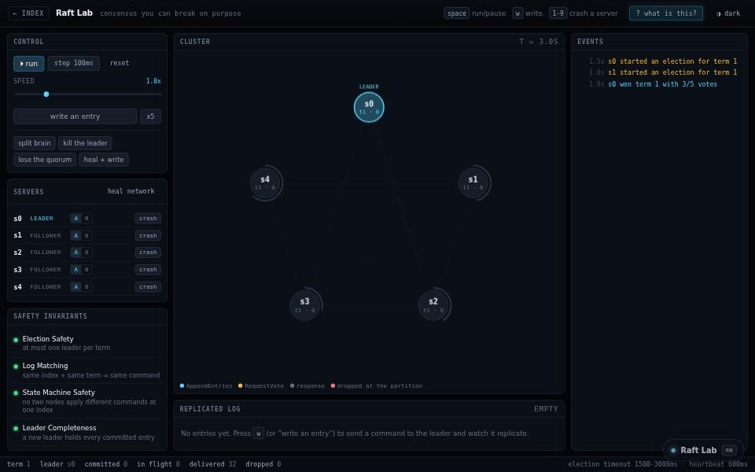

engineering tool · about 7 min · The Engine Rooms
Raft Lab
Five servers agreeing with each other. Cut the network in half, crash the leader, and watch the safety guarantees hold.

The problem
Consensus guarantees are taken on faith. Here you can cut the network and check them.
What it does
- Five servers running real leader election and log replication
- Cut the network in half or crash the leader
- An invariant checker that keeps score
The most interesting decision
Virtual time and a seeded clock
A run is reproducible: the same seed and interventions give the same history, which is what makes the invariant checker meaningful rather than decorative.
Built with
- Raft leader election
- Log replication
- Deterministic virtual clock
Evidence
Crash the leader, partition the cluster, and the safety guarantees still hold. Read its tests
Its world
Five pillars in a ring, one of them crowned, all of them listening for a heartbeat.